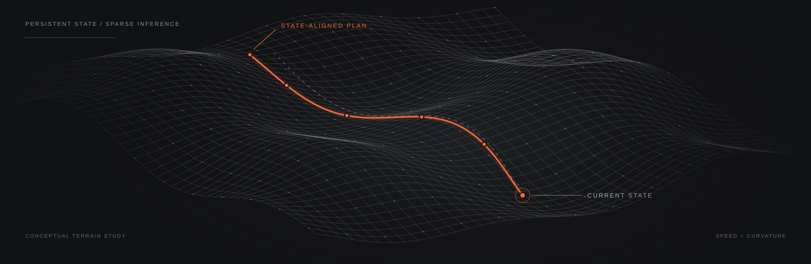

Decode & initialize
A frozen VLA supplies speed–curvature actions. Complete the horizon and blend the fresh plan with measured motion.
Visual intelligence.
Continuous state-aware execution.

THE EXECUTION GAP
Visual inference is expensive. Vehicle motion changes between predictions. A cached plan alone cannot close that gap.
FastRoverVLA turns a decoded plan into a persistent execution state—correcting it against measured motion and carrying those corrections forward.
Qwen3-VL-2B · 3 s horizon
01 / METHOD
A compact interface after action decoding.
One retained plan, updated with every measured state.
A frozen VLA supplies speed–curvature actions. Complete the horizon and blend the fresh plan with measured motion.
Correct actions against the current state at every update, apply the speed bound, and integrate a 3 s trajectory.
Consume the first action. Retain the corrected remainder so that subsequent updates inherit the correction.
A BOUNDED REUSE BUDGET
Normalize speed and curvature variation within the decoded plan. Higher roughness selects a shorter reuse budget; lower roughness selects a longer one.
A budget K permits K reuse updates.
The complete refresh interval is K + 1.
03 / RESULTS
Qwen3-VL-2B · two off-road datasets
Six waypoints. A three-second horizon.
| Execution | ORAD-3D | RELLIS-3D | ||||
|---|---|---|---|---|---|---|
| ADE ↓ m | FDE ↓ m | Refresh ↓ % | ADE ↓ m | FDE ↓ m | Refresh ↓ % | |
| Every update | 0.384 | 0.726 | 100.0 | 0.387 | 0.820 | 100.0 |
| Fixed interval | 0.330 | 0.599 | 8.2 | 0.289 | 0.584 | 11.4 |
| FastRoverVLA | 0.327 | 0.593 | 5.8 | 0.266 | 0.526 | 4.8 |
Shared frozen predictions; refresh counts are plan admissions, with zero model requests during replay. Primary archived scoring convention; see the separate past-only-heading check in the repository.
INDEPENDENT SERIAL REQUEST RUNS
ORAD · 355.4 → 21.4 ms/update
RELLIS · 443.9 → 21.3 ms/update
Qwen3 request-wrapper measurements from the original GPU runs. These are processing-cost ratios, separate from the frozen replay above; they do not measure asynchronous speedup or complete vehicle latency.
Persistent state correction is the main source of the observed accuracy benefit. A motion-only recurrent control is competitive, and equal-budget uniform refresh is close to the plan-conditioned rule. The release includes these controls so that the execution effect can be examined directly.
Reproduce the controls ↗02 / EXPLORE THE REPLAY
Scrub through the released numerical outputs.
Compare continued correction with a matched-refresh control.
The plot shows local trajectories in metres, with forward distance on the horizontal axis. This is open-loop numerical replay, not a vehicle simulation. Protocol and reference-frame details ↗
04 / QUALITATIVE RESULTS
Qualitative results from the manuscript, pairing camera projections with bird’s-eye trajectories.
05 / OPEN SOURCE
A small execution core, full-precision configurations, released numerical traces, and direct checks against the archived outputs.
git clone https://github.com/chang2tz/FastRoverVLA.git
cd FastRoverVLA
python -m pip install --no-deps -e .
# Recompute and verify the numerical release
python scripts/reproduce.py --verifyCITATION
If the execution interface helps your research, please cite the software release. A paper citation will be added when the manuscript is public.
@software{fastrovervla2026,
author = {Zhao, Changtao and Guan, Yingxue and
Wang, Li and Song, Ziying and Zhao, Shijie and
Zhang, Yuhang and Zhang, Shengkai and Wang, Qing},
title = {FastRoverVLA: Fast Vision-Language-Action
Execution for Off-Road Autonomous Driving},
year = {2026},
version = {0.1.0},
url = {https://github.com/chang2tz/FastRoverVLA}
}